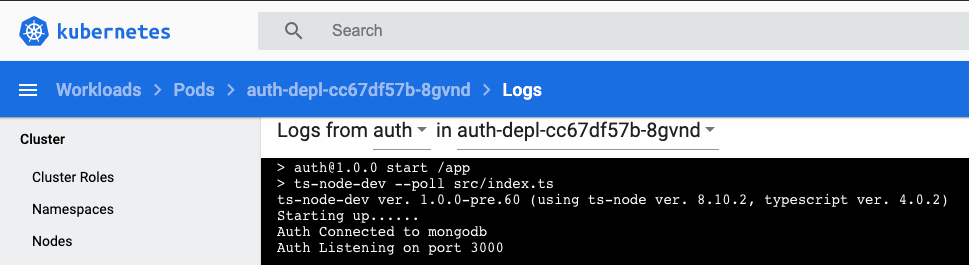
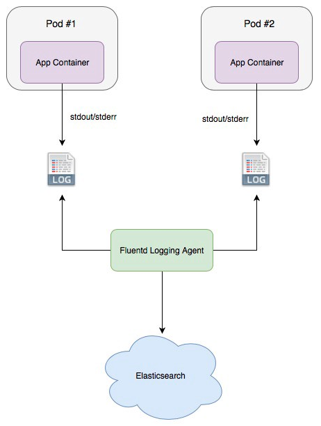

Created by Peter Gross, last modified on Sep 13, 2020
Starting the development of the business function services first is one of the listed biggest mistakes that companies make when transitioning to micro-services.
There are services that cut across the business functions that should be made available for everyone to use, and these should form part of the initial developments.
Examples of these services are:
Logging
Monitoring
Caching
Authentication/Authorisation
Management Information/ Data lake integration
These types of services should be made available to the product teams, so they can concentrate on providing business benefit for their users.
Example for this application
Kubernetes automatically logs all of the output to console that our containers output. So for phase 1 I just decided to log all errors to console and use the kubernetes dashboard to monitor the logs.

However, This does not alert me to issues happening, or provide easy traceability of issues going on so in phase 2 I will have to develop a central logging service which allows me to analyse the logs

To analyse the logs, I will also have to work out how to follow the flow of information through the services.
{kind=link}
{kind=link}
{kind=link}
{kind=link}